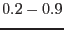
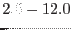

XMM-Newton Science Analysis System
mos-filter (esas-0.9.39) [xmmsas_20170112_1337-16.0.0]
Output Files
- mosprefix-cc-ori.fits - The cal-closed photon event files
produced by emchain
- mosprefix-clean.fits - The filtered photon event
files
- mosprefix-corn.fits - Event list of data from the
corners of the detectors
- mosprefix-corn-image.fits - Image of the filtered
data from the unexposed corners in detector coordinates
- mosprefix-gti.fits - Fits file list of good time
intervals identified by the task espfilt
- mosprefix-gti.txt - Ascii list of good time
intervals identified by the task espfilt
- mosprefix-hist.qdp - QDP plot file of the light
curves showing the filtered intervals and a histogram of the
mosprefix-rate.fits showing the filtering selection.
- mosprefix-obj-image-det.fits - Image of the filtered
data in detector coordinates
- mosprefix-obj-image-det-soft.fits - Image of the filtered
data in detector coordinates in the  keV band
- mosprefix-obj-image-det-unfilt.fits - Image of the unfiltered
data in detector coordinates
- mosprefix-obj-image-sky.fits - Image of the filtered
data in sky coordinates
- mosprefix-ori.fits - The photon event files produced
by emproc / emchain
- mosprefix-ratec.fits - Light curve of the data
from the corners of the detectors in the  keV band
- mosprefix-rate.fits - Light curve of the data
within the open area of the detectors in the keV band
XMM-Newton SOC/SSC -- 2017-01-12